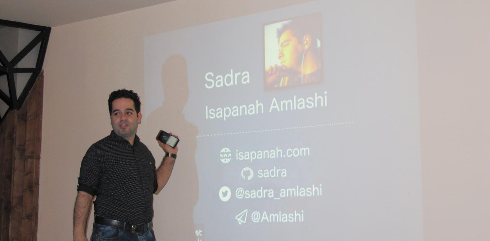

درباره من

من رحمت اله عیسی پناه املشی هستم، اما همه من رو صدرا ، صدا میزنن.
من در ۱ فروردین سال ۱۳۷۰ در شهرستان املش بدنیا اومدم. اما حدود ۲۰ ساله که در گرگان زندگی میکنم. در مقطع کارشناسی به دلیل علاقه ام به مسائل مخابراتی، در رشته برق-مخابرات از دانشگاه آزاد واحی علی آباد کتول، فارغ التحصیل شدم. و در مقطع ارشد بخاطر حرفه ام و تغییر علاقه شدیدم به برنامه نویسی و حوزه فینتک، مشغول به تحصیل در رشته تجارت الکترونیکی در دانشگاه آزاد واحد الکترونیکی شدم.
از سال ۱۳۸۵ که اولین کامپیوترم رو خریدم، علاقه شدید به دنیای تکنولوژی پیدا کردم، و اولین وبلاگم رو یکسال بعد در بلاگفا به نام IranianSymbols راه اندازی کردم و راجع به تاریخ ایران مطلب مینوشتم. بعدها به سمت شبکه های اجتماعی کشیده شده و در فیسبوک صاحب و مدیر چند پیج شدم ( که مجموع اونها به ۴ میلیون لایک میرسید). در همون زمان با سرویس Google Adsense کار میکردم (یا بغول دوستان، پدر گوگل رو درمیآوردم).
تا قبل از سال ۹۴ مشغول به فریلنسری و پروژههای شخصی بودم. اما بعد از اون در شرکت پارسفایبرنت و درسمت توسعه دهنده ارشد اپلیکیشنهای Android و iOS مشغول به کار شدم و تا امروز در ۴ پروژه اپلیکیشنهای iOS و اندروید، فایبرنت و فودنت در خدمت تیم بودم.
برنامه نویسی رو با یاد گرفتن PHP و طراحی قالب و پلاگین وردپرس در همون سالها شروع کردم. بعد از مدتی به سمت طراحی و توسعه اپلیکیشن Android کشیده شدم، تقریبا از سال ۹۱. همچنین از سال ۹۴ بطور حرفه ای مشغول طراحی اپلیکیشن iOS شدم.
مدت یکسالی هست که دارم زبانها و فریم ورکهای مختلفی رو تست میکنم و در این مدت با زبانهایی مثل Python، Ruby، Go کار کردم. و البته یکی دو بازی هم با گیم انجین Construct2 طراحی کردم.
همینطور بد نیست بدونید که برای پروژه های شخصیم از Node.JS برای بکاند، ReactJs برای فرانتاند و از سرویس Docker برای مدیریت وب اپلیکیشنهام استفاده میکنم.
در وبلاگ خودم قصد دارم تا راجع به موضوعات و مشکلاتی که در حوزه کاریم بطور روزمره به اونها برخورد میکنم بنویسم. همچنین ازونجایی که به موسیقی و فیلم علاقه زیادی دارم، تعجب نکنید اگه لابلای پستهام ازین موضوعات میبینید ;)
شما میتونید به پروژههای اوپن سورسی که انجام دادم در گیتهاب من به آدرس @sadra دسترسی داشته باشید.
همچنین من رو توی توییتر یا اینستاگرم دنبال کنید.